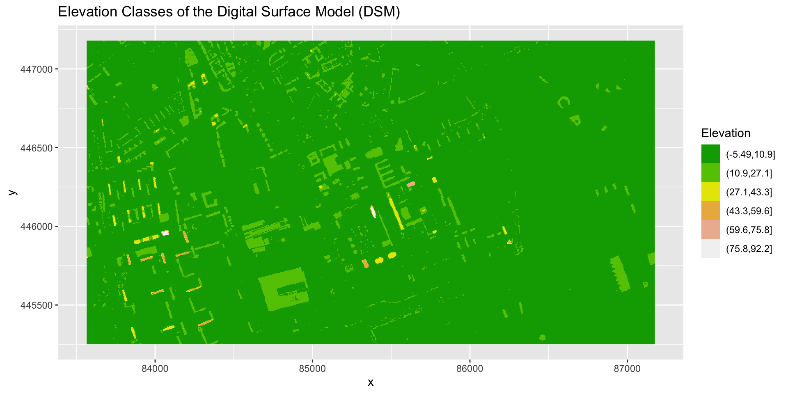
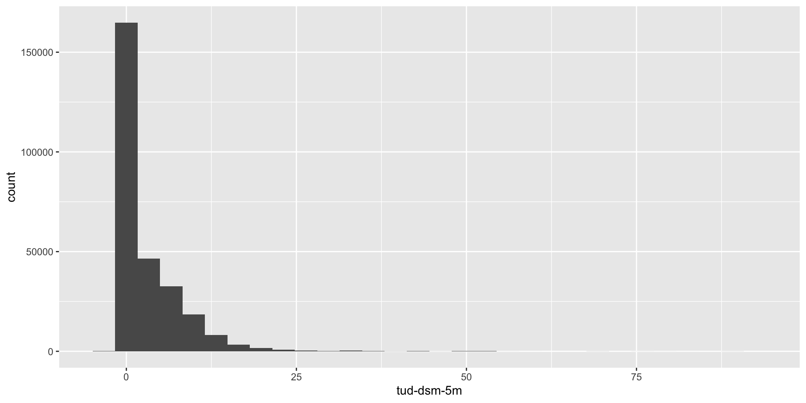
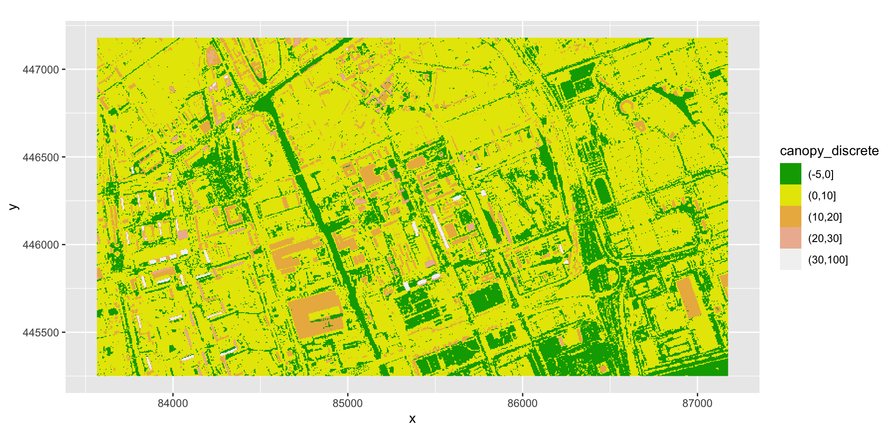
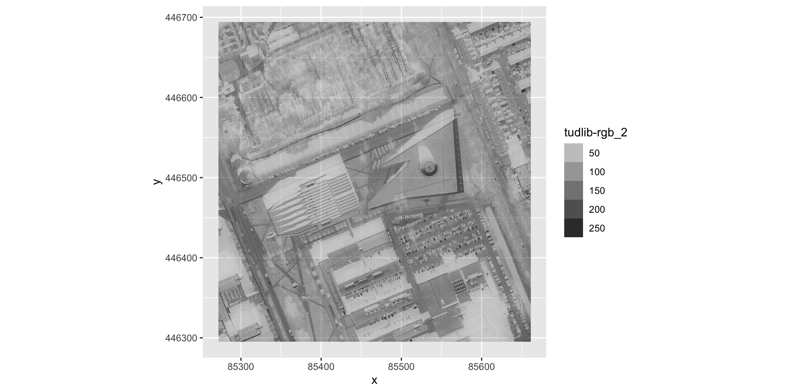

02:00
terra packageA plot showing the green band of an RGB aerial image of the TU Delft library
Use describe() to determine the following about the tud-dsm-5m-hill.tif file:
DSM_TUD?02:00
DSM_TUD? [1] "Driver: GTiff/GeoTIFF"
[2] "Files: /Users/claudiuforgaci/Projects/_carpentries/gdcu-slides/data/tud-dsm-5m-hill.tif"
[3] "Size is 722, 386"
[4] "Coordinate System is:"
[5] "PROJCRS[\"Amersfoort / RD New\","
[6] " BASEGEOGCRS[\"Amersfoort\","
[7] " DATUM[\"Amersfoort\","
[8] " ELLIPSOID[\"Bessel 1841\",6377397.155,299.1528128,"
[9] " LENGTHUNIT[\"metre\",1]]],"
[10] " PRIMEM[\"Greenwich\",0,"
[11] " ANGLEUNIT[\"degree\",0.0174532925199433]],"
[12] " ID[\"EPSG\",4289]],"
[13] " CONVERSION[\"RD New\","
[14] " METHOD[\"Oblique Stereographic\","
[15] " ID[\"EPSG\",9809]],"
[16] " PARAMETER[\"Latitude of natural origin\",52.1561605555556,"
[17] " ANGLEUNIT[\"degree\",0.0174532925199433],"
[18] " ID[\"EPSG\",8801]],"
[19] " PARAMETER[\"Longitude of natural origin\",5.38763888888889,"
[20] " ANGLEUNIT[\"degree\",0.0174532925199433],"
[21] " ID[\"EPSG\",8802]],"
[22] " PARAMETER[\"Scale factor at natural origin\",0.9999079,"
[23] " SCALEUNIT[\"unity\",1],"
[24] " ID[\"EPSG\",8805]],"
[25] " PARAMETER[\"False easting\",155000,"
[26] " LENGTHUNIT[\"metre\",1],"
[27] " ID[\"EPSG\",8806]],"
[28] " PARAMETER[\"False northing\",463000,"
[29] " LENGTHUNIT[\"metre\",1],"
[30] " ID[\"EPSG\",8807]]],"
[31] " CS[Cartesian,2],"
[32] " AXIS[\"easting (X)\",east,"
[33] " ORDER[1],"
[34] " LENGTHUNIT[\"metre\",1]],"
[35] " AXIS[\"northing (Y)\",north,"
[36] " ORDER[2],"
[37] " LENGTHUNIT[\"metre\",1]],"
[38] " USAGE["
[39] " SCOPE[\"Engineering survey, topographic mapping.\"],"
[40] " AREA[\"Netherlands - onshore, including Waddenzee, Dutch Wadden Islands and 12-mile offshore coastal zone.\"],"
[41] " BBOX[50.75,3.2,53.7,7.22]],"
[42] " ID[\"EPSG\",28992]]"
[43] "Data axis to CRS axis mapping: 1,2"
[44] "Origin = (83565.000000000000000,447180.000000000000000)"
[45] "Pixel Size = (5.000000000000000,-5.000000000000000)"
[46] "Metadata:"
[47] " AREA_OR_POINT=Area"
[48] "Image Structure Metadata:"
[49] " INTERLEAVE=BAND"
[50] "Corner Coordinates:"
[51] "Upper Left ( 83565.000, 447180.000) ( 4d20'49.32\"E, 52d 0'33.67\"N)"
[52] "Lower Left ( 83565.000, 445250.000) ( 4d20'50.77\"E, 51d59'31.22\"N)"
[53] "Upper Right ( 87175.000, 447180.000) ( 4d23'58.60\"E, 52d 0'35.30\"N)"
[54] "Lower Right ( 87175.000, 445250.000) ( 4d23'59.98\"E, 51d59'32.85\"N)"
[55] "Center ( 85370.000, 446215.000) ( 4d22'24.67\"E, 52d 0' 3.27\"N)"
[56] "Band 1 Block=722x11 Type=Byte, ColorInterp=Gray"
[57] " NoData Value=0" Create a plot of the TU Delft Digital Surface Model (DSM_TUD) that has:
05:00
DSM_TUD_df <- DSM_TUD_df |>
mutate(fct_elevation_6 = cut(`tud-dsm-5m`, breaks = 6))
my_col <- terrain.colors(6)
ggplot() +
geom_raster(data = DSM_TUD_df, aes(
x = x,
y = y,
fill = fct_elevation_6
)) +
scale_fill_manual(values = my_col, name = "Elevation") +
coord_equal() +
labs(title = "Elevation Classes of the Digital Surface Model (DSM)")
View the CRS for each of these two datasets. What projection does each use?
02:00
[1] "PROJCRS[\"Amersfoort / RD New\","
[2] " BASEGEOGCRS[\"Amersfoort\","
[3] " DATUM[\"Amersfoort\","
[4] " ELLIPSOID[\"Bessel 1841\",6377397.155,299.1528128,"
[5] " LENGTHUNIT[\"metre\",1]]],"
[6] " PRIMEM[\"Greenwich\",0," [1] "GEOGCRS[\"WGS 84\","
[2] " DATUM[\"World Geodetic System 1984\","
[3] " ELLIPSOID[\"WGS 84\",6378137,298.257223563,"
[4] " LENGTHUNIT[\"metre\",1]]],"
[5] " PRIMEM[\"Greenwich\",0,"
[6] " ANGLEUNIT[\"degree\",0.0174532925199433]]," DTM_TUD is in the Amersfoort / RD New projection, whereas DTM_hill_TUD is in WGS 84.
It’s often a good idea to explore the range of values in a raster dataset just like we might explore a dataset that we collected in the field.
CHM_TUD that we just created?CHM_TUD raster using breaks that make sense for the data.10:00


We can use the rast() function to import specific bands in our raster object by specifying which band we want with lyrs = N (N represents the band number we want to work with). To import the green band, we would use lyrs = 2. We can convert this data to a data frame and plot the same way we plotted the red band.
Import and plot the green band.
05:00
